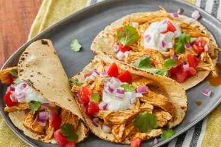

Fiesta Slow Cooker Shredded Chicken Tacos

Description
This is your guide on how to cook these ridiculously tasty tacos
Ingredients
- 1 cup chicken broth
- 3 tablespoons taco seasoning mix
- 1 pound skinless, boneless chicken breasts
Steps
- Combine chicken broth and taco seasoning mix in a bowl.
- Place chicken in a slow cooker. Pour chicken broth mixture over chicken.
- Cook on Low for 6 to 8 hours. Shred chicken.
Nutrition Facts (per serving)
- Calories = 71
- Fat = 1g
- Carbs = 2g
- Protein = 11g